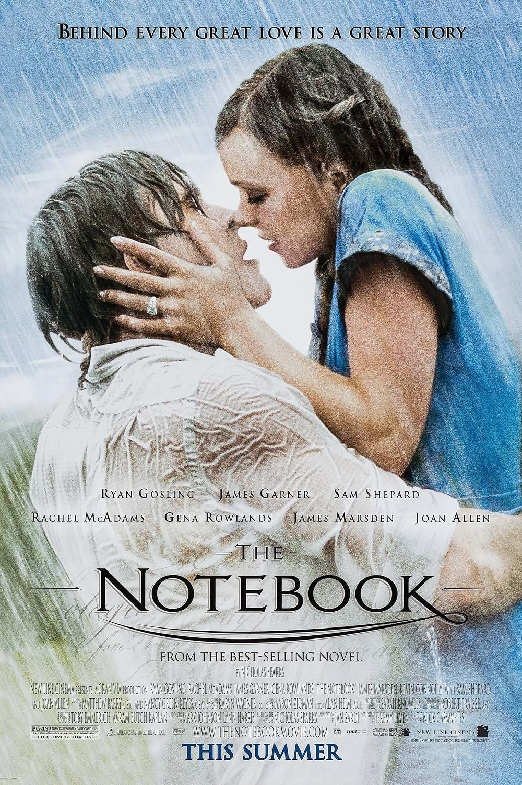

VELOURS TOP MOVIES
By Saara Hussein, Kimberly Michalak and Dania Al-Zubeidi
Welcome to the cinematic world of the owners of Velour. We are three women at Velour: Saara Hussein, Kimberly Michalak, and Dania Al-Zubeidi, and we’ve handpicked two movies from our favorite genres: Action, Romance, and Horror.
Saara is a big fan of movies with momentum and adrenaline kicks. Whether it's fast-paced action, high stakes, or just pure excitement, she loves the thrill of it all.
Kimberly is more of a traditional sucker for a romantic movie. She thrives on love stories, from the tender to the dramatic, where emotions and connections are at the core of the experience.
Dania, on the other hand, finds the thrill in fear. The discomfort of a truly scary movie only adds to the enjoyment the more spine-chilling, the better!
So let’s dive into our top picks. Hopefully, you’ll find some new movies to add to your watchlist!
Saara's Top Action Movies
1. Spiderman No Way Home

Spider-Man: No Way Home is hands down one of my favorite movies as a lifelong spiderman fan. From the very beginning, it grabs your attention with non-stop action, and the stakes only get higher as the story unfolds. What I love most about it is the adrenaline rush. It's the perfect mix of thrilling fight scenes and emotional moments that make you care about the characters. I picked this movie because it checks all the boxes for me. I’m a huge fan of movies with fast-paced momentum, and this one doesn’t slow down. Every scene had me on the edge of my seat, and I can’t get enough of the excitement it brings. Plus, the emotional depth is there, and it makes the action all the more meaningful. It’s a perfect blend of everything I love in an action movie!
2. Fast & Furious 7
Fast & Furious 7 is one of my all-time favorites. It’s packed with crazy car chases, intense action, and stunts that keep you on the edge of your seat. But what really gets to me is how the movie mixes that excitement with some really emotional moments. It’s not just about the action, it’s about the friendships and loyalty between the characters. I picked this movie because it has everything I love, fast cars, thrilling moments, and a story that tugs at your heart. It’s the perfect blend of excitement and emotion, and that’s why it’s one of my top picks.
Kimberly's Top Romantic Movies
1. The Notebook
The Notebook is the ultimate romance movie. It’s got everything, passion, heart, and a love story that sticks with you long after the credits roll. The chemistry between the characters is so real, and the story just pulls you in, making you root for them no matter what life throws their way. It’s emotional, but in the best way. I picked this movie because I’m all about that classic love story. It reminds me that love can be messy, complicated, but also really beautiful. It’s one of those films that just makes you believe in true love, and I can watch it over and over again.
2. Titanic
Titanic is one of those movies that never really leaves you. It’s such a beautiful love story, but with so much heartache mixed in. The connection between Jack and Rose just feels real, and you can’t help but get wrapped up in their story. It’s honestly one of those films where you’re laughing and crying all at the same time. I picked Titanic because it’s a classic. The way Jack and Rose love each other, even though everything around them is falling apart, just gets me every time. Plus, there’s something about how it makes you feel, you watch it and you can’t help but think about how powerful love really is.
Dania's Top Horror Movies
1. Get Out

Get Out is one of those movies that really sticks with you. It’s not just scary for the sake of being scary there’s so much more going on. The way it builds suspense and makes you think about race and society while keeping you on the edge of your seat is incredible. It’s a horror movie, but with a deeper meaning that really gets to you. I picked Get Out because it does what great horror should do, it makes you uncomfortable and makes you think. It’s not just about what’s happening on screen, but what it says about the real world. It’s a perfect fit for my favorite genre because it’s not just about jump scares, it’s about something bigger.
2. Scream 6

Sinners is a new favorite of mine, and it definitely deserves a mention. The film is such a unique blend of psychological tension and horror, with a story that keeps you guessing until the very end. What I love about it is how it plays with the concept of guilt and redemption, weaving in supernatural elements that make everything feel so unsettling. It’s not your typical horror flick, which makes it even more exciting. I picked Sinners because it’s fresh, bold, and makes you think. It’s one of those films that leaves you with questions, and I love that. It’s a great example of how horror can be more than just jump scares iit can be something that really sticks with you long after the credits roll.